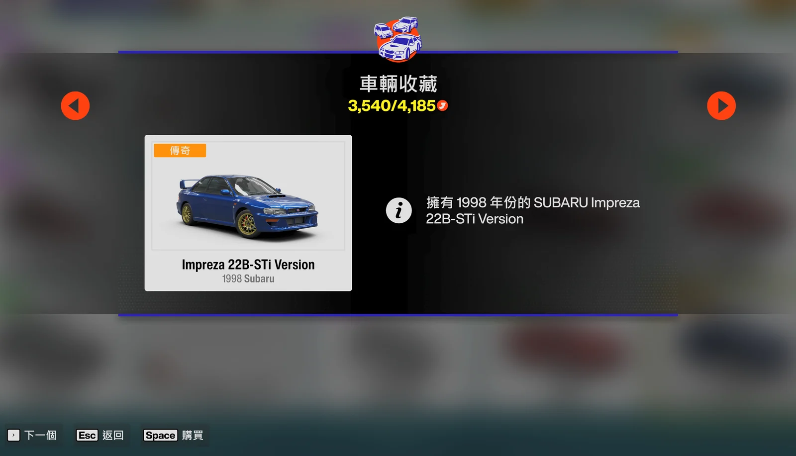

第四部分 — 批次自動購車
批次自動購車
FAFE 可以重複購買任何可購買車輛。你可以使用 22B-STI 自動預設路線，或先自行開啟想購買的車輛。
1
開啟「購買車輛」
點選 FAFE 側邊欄的 🛒 購買車輛。
2
選擇車輛定位方式
主選單自動導航（僅限 22B-STI）：將遊戲停在主選單。FAFE 會自動經由收藏日記 → 探索大師 → 車輛收藏 → Subaru 開啟 22B-STI，完成後再返回主選單。
手動定位（適用任何可購買車輛）：自行進入收藏日記 → 車輛收藏，選擇並點開你想購買的車輛，然後將遊戲停在該車的詳細資料／購買畫面。FAFE 會針對這輛車重複購買流程。

手動開始位置範例：點開目標車輛後停在此詳細資料畫面，確認左下角顯示「Space 購買」。圖中 22B-STI 只是範例，任何可購買車輛都適用。
3
設定批次數量並開始
設定購買數量（0 = 無限），再點選 ▶ 開始或按 F9。倒數時間為3 秒；啟用背景模式時，不需要切換回 Forza。
4
讓 FAFE 重複購買
FAFE 會依序按下空白鍵 → 下鍵 → Enter → Enter → Enter，預設每次輸入間隔 0.5 秒，然後持續重複直到完成批次。間隔可在設定中調整。
5
停止
隨時按 F9 或點選 ■ 停止，即可安全停止。
請記住：手動定位時，購車巨集適用於任何可購買車輛；只有從主選單開始的自動導航限定為 22B-STI 預設路線。